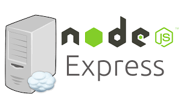

O que tenho estudado.
HTML5

HTML5 (Hypertext Markup Language, versão 5) é uma linguagem de marcação para a World Wide Web e é uma tecnologia chave da Internet, originalmente proposto por Opera Software.[1] É a quinta versão da linguagem HTML. Esta nova versão traz consigo importantes mudanças quanto ao papel do HTML no mundo da Web, através de novas funcionalidades como semântica e acessibilidade. Possibilita o uso de novos recursos antes possíveis apenas com a aplicação de outras tecnologias. Sua essência tem sido melhorar a linguagem com o suporte para as mais recentes multimídias, enquanto a mantém facilmente legível por seres humanos e consistentemente compreendida por computadores e outros dispositivos (navegadores, parsers etc). O HTML5 será o novo padrão para HTML, XHTML, e HTML DOM. Atualmente, está em fase de esboço, porém diversos navegadores já implementam algumas de suas funcionalidades.
CSS3

CSS3 é a terceira mais nova versão das famosas Cascading Style Sheets (ou simplesmente CSS), pela qual se define estilos para um projeto web (página de internet). Com efeitos de transição, imagem, imagem de fundo/background e outros, pode-se criar estilos únicos para seus projetos web, alterando diversos aspectos de design no layout da página.
A principal função do CSS3 é abolir as imagens de plano/Background de fundo, bordas arredondadas, apresentar transições e efeitos para criar animações de vários tipos, como um simples relógio de ponteiros.
Isso se deve aos novos browsers/navegadores que estão chegando com suporte à essa linguagem, como o Google Chrome, Opera, Internet Explorer 9, Safari e Mozilla Firefox. Assim, o CSS3 facilitará o trabalho dos profissionais de front-end e também a utilização de sites pelos usuários.
Bootstrap

Bootstrap é um framework web com código-fonte aberto para desenvolvimento de componentes de interface e front-end para sites e aplicações web usando HTML, CSS e JavaScript, baseado em modelos de design para a tipografia, melhorando a experiência do usuário em um site amigável e responsivo.
O Bootstrap é um dos projetos mais bem avaliados no site GitHub, com mais de 111 600 estrelas e 51 500 forks.[1] Possui ampla documentação na página oficial: https://getbootstrap.com/, assim como diversos tutoriais e materiais em português.
Angular JS

AngularJS é um framework JavaScript código aberto, mantido pelo Google, que auxilia na execução de single-page applications. Seu objetivo é aumentar aplicativos que podem ser acessados por um navegador web, foi construído sob o padrão model-view-view-model (MVVM), em um esforço para facilitar tanto o desenvolvimento quanto o teste dos aplicativos.
A biblioteca lê o HTML que contém atributos especiais e então executa a diretiva na qual esta tag pertence, e faz a ligação entre a apresentação e seu modelo, representado por variáveis JavaScript comuns. O valor dessas variáveis JavaScript podem ser setadas manualmente, ou via um recurso JSON estático ou dinâmico.
React JS
O React (também denominado React.js ou ReactJS) é uma biblioteca JavaScript de código aberto com foco em criar interfaces de usuário (frontend) em páginas web. É mantido pelo Facebook, Instagram, outras empresas e uma comunidade de desenvolvedores individuais. É utilizado nos sites da Netflix, Imgur, Feedly, Airbnb, SeatGeek, HelloSign, Walmart e outros.[6]
JavaScript

JavaScript (frequentemente abreviado como JS) é uma linguagem de programação interpretada estruturada, de script em alto nível com tipagem dinâmica fraca e multiparadigma (protótipos, orientado a objeto, imperativo e, funcional).[2][3] Juntamente com HTML e CSS, o JavaScript é uma das três principais tecnologias da World Wide Web. JavaScript permite páginas da Web interativas e, portanto, é uma parte essencial dos aplicativos da web. A grande maioria dos sites usa, e todos os principais navegadores têm um mecanismo JavaScript dedicado para executá-lo.[4]
Node JS

Node.js é um software de código aberto, multiplataforma, baseado no interpretador V8 do Google e que permite a execução de códigos JavaScript fora de um navegador web.[6][7]
O runtime de JavaScript é constituído pelos seguintes comandos: node package manager (npm), e npx (node package extractor); onde o primeiro tem o propósito de executar código armazenado num package de nodejs, instalando o software globalmente ou localmente, já o segundo tem o propósito de instalar a nível local o código instalado globalmente. Um exemplo disso é o npx create-react-app que tem como propósito instalar a nível local um template vazio de um site de react, pronto a ser usado, através de uma fórmula instalada com npm.
A tecnologia robusta C++ e boost, como era conhecido no final da década de 1990 (quando a sintaxe foi completamente alterada, mantendo-se para fins de compatibilidade backward). Usando também recorrentemente para este fim a linguagem bindings com sistemas de JavaScript mais universais, garantindo que há o mínimo de deprecações no código com o passar do tempo. Exceções disso, são alguns de JavaScript vanilla, que não são incluídos em node, que podem ser importados para nodejs. Um exemplo disso é o comando readine(), que precisa de ser importado e sofre de algumas alterações. Ainda assim o código é bem mais buletproof do que o código de Python, que depreca com relativa facilidade.
O código de nodejs é baseado na arquitetura event-driven, capaz de entrada/saída assíncrona. Otimizado para ser corrido em tempo real tratando-se também de um ditribuído.
Express.js
Express.js (ou apenas Express) é um framework para Node.js que fornece recursos mínimos para construção de servidores web (HTTP).[2] Foi lançado como software livre e de código aberto sob a Licença MIT.[3] É um dos mais populares frameworks para servidores em Node.js.[4]
MongoDB

MongoDB é um software de banco de dados orientado a documentos livre, de código aberto e multiplataforma, escrito na linguagem C++.[5] Classificado como um programa de banco de dados NoSQL, o MongoDB usa documentos semelhantes a JSON com esquemas. É desenvolvido pela MongoDB Inc. e publicado sob uma combinação da GNU Affero General Public License e Licença Apache.
MySQL

O MySQL é um sistema de gerenciamento de banco de dados (SGBD), que utiliza a linguagem SQL (Linguagem de Consulta Estruturada, do inglês Structured Query Language) como interface. É atualmente um dos sistemas de gerenciamento de bancos de dados mais populares[2] da Oracle Corporation, com mais de 10 milhões de instalações pelo mundo.[3]